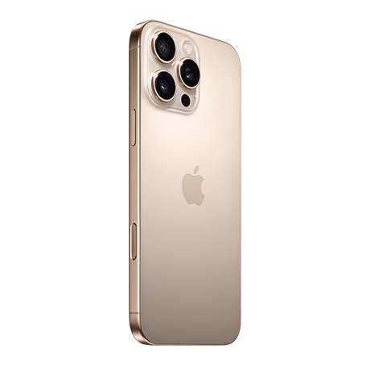
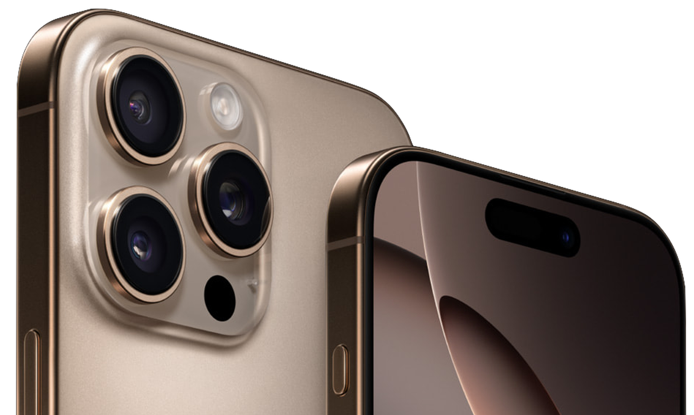
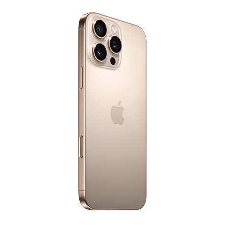
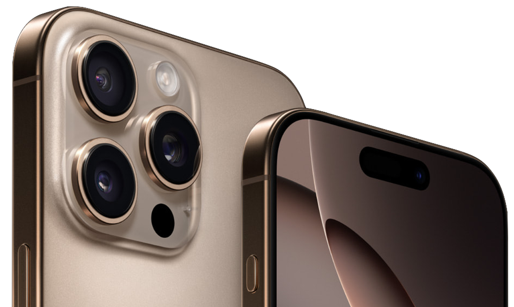

Phone
Apple iPhone 16 Pro Max
 



iPhone 16 Pro features a Grade 5 titanium design with a new, refined microblasted texture. Titanium has one of the highest strength to weight ratios of any metal, making these models incredibly strong and impressively light. iPhone 16 Pro comes in four stunning finishes including new Desert Titanium. Internal design improvements including a 100 percent recycled aluminum thermal substructure and back glass optimizations that further dissipate heat enable up to 20 percent better sustained performance than iPhone 15 Pro. So you can do all the things you love like high-intensity gaming for longer. ew display technology allows us to route display data under active pixels with no distortion, resulting in thinner borders for larger 6.3 inch and 6.9 inch Super Retina XDR displays that feel great in your hand. iPhone 16 Pro is splash, water, and dust resistant.4 It also has our latest generation Ceramic Shield material that’s two times tougher than any smartphone glass. Talk about durable. iPhone 16 Pro is built for Apple Intelligence, the personal intelligence system that helps you write, express yourself, and get things done effortlessly.